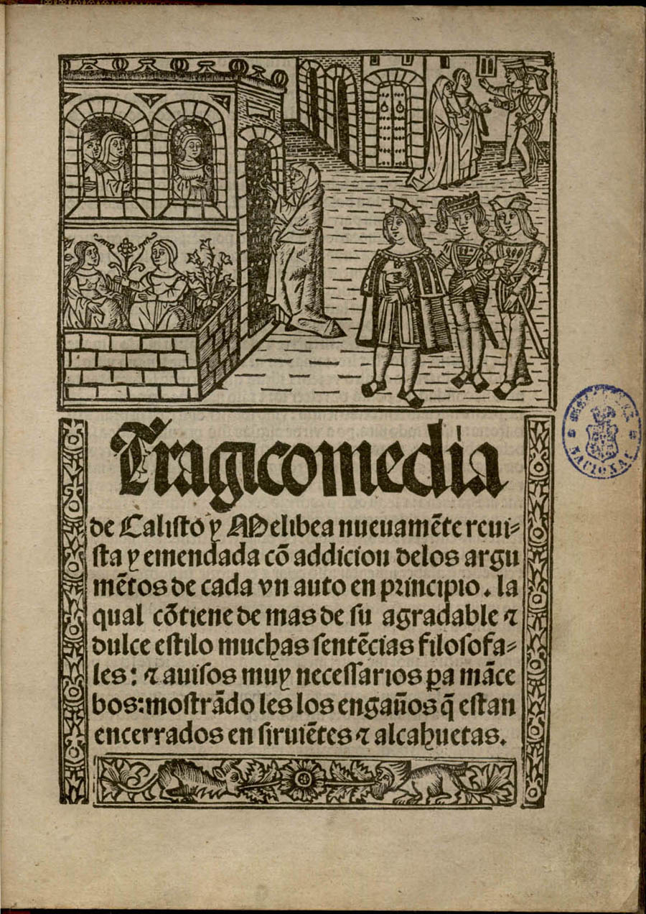
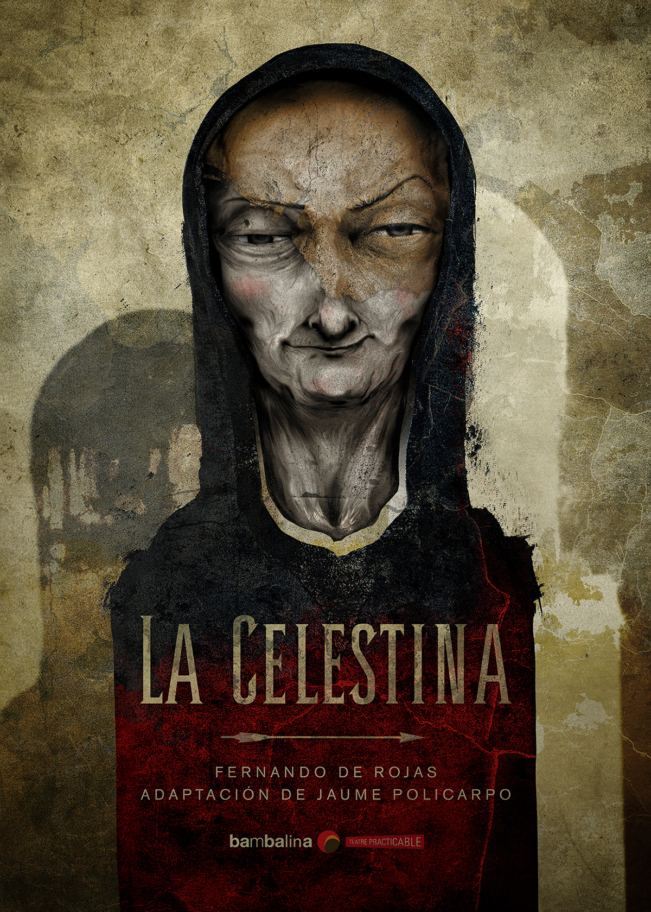

Trama
Inicio
Todo comeinza cuando Calisto conoce a la bella Melibea en el jardín de su padre, a donde llega al seguir su halcón de caza. Inmediatamente, enamorado de la joven, Calisto hace avances que ella aparenta rechazar indignadamente. Calisto, enfermo profundamente de amor, regresa a su casa donde lamenta su desgracia. Uno de sus criados, Sempronio, le cuenta a su amo sobre cierta mujer llamada Celestina quien por buena paga cumple los deseos de enamorados como él. Por otro lado su otro criado, Pármeno, le advierte sobre la amenaza que representa esta mujer vieja y fuertemente se opone a los consejos de Sempronio. Aún así Calisto, impulsado por el deseo, no presta atención a las advertencias de Pármeno y decide contactar a la Celestina.

Desarrollo
Más tarde, Celestina visita a Calisto y ambos pronto forman un acuerdo. Concluyeron que se le pagaría bien a la vieja Celestina por usar sus habilidades para asegurar el amor de Melibea. La vieja alcahueta utiliza una de sus muchas profesiones, la de vendedora de hilos, para acceder al hogar de Melibea. Allí, utiliza su amplio conocimiento para despertar el interés de la hermosa joven por Calisto. Celestina logra cumplir su objetivo y se va de la casa de Melibea con una victoria asegurada. Sin embargo, a la vieja hechizera aún le quedaba un obstáculo; el joven sirviente de Calisto, Pármeno. El mismo estaba fuertemente en contra de ella, lo que representaba un gran problema ya que la vieja buscaba aprovecharse del dinero de su cliente. Mediante la persuación, ella gana la confianza del joven al proporcionarle la joven Areúsa.
Conflicto
Con el tiempo, Melibea acepta hablar en secreto con Calisto. Él la visitaría al jardín una noche. Para este momento ya Celestina estaba bien pagada y contenta. Sin embargo, su resistencia a compartir sus ganancias con los dos criados de Calisto, cosa que prometió a ambos para ganar su favor, causa que termine siendo asesinada por ellos. A la mañana siguiente, Sempronio y Pármeno fueron encontrados decapitados en la plaza. Calisto continúa visitando a Melibea hasta que una noche, mientras los dos amantes estaban juntos en el jardín, él escucha una serie de ruidos misteriosos. Tristán y Sosia, sustitutos de sus sirvientes ejecutados, lo alertan. Temeroso por la reputación de Melibea, Calisto se apresura a ayudarlos. En el intento, él cae de la escalera que había usado cada noche para traspasar el muro y muere.

Desenlace
Adolorida por su muerte, Melibea se encierra en una torre. Su padre, Pleberio, despertado por el ruido y la confusión, escucha su lamento y confesión. Luego observa impotente cómo su hija salta hacia su muerte. El drama termina con el largo lamento de Pleberio de luto por su hija, protestando por la injusticia de estos hechos, y deprimido por los largos años de soledad que le esperan.